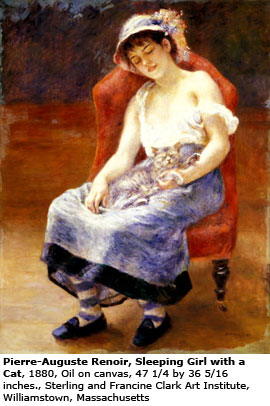
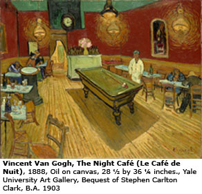

Masterpieces from the Clark's Collections United
Williamstown, MA - The first exhibition to unite masterpieces from the remarkable collections of Sterling Clark and Stephen Clark will be presented at the Sterling and Francine Clark Art Institute from June 4 to September 4, 2006. Featuring close to 70 paintings, The Clark Brothers Collect: Impressionist and Early Modern Paintings will examine the brothers’ collecting and how they helped to define the changing taste for Impressionist and Early Modern art in the first half of the 20th century. It will explore their relationship, their rivalry, and the influential but ultimately divergent roles they came to play in the arts in the United States.
Among the highlights in the exhibition will be a number of iconic works from the 19th and 20th centuries, including Van Gogh’s The Night Café (Le Café de Nuit) (1888, Yale University Art Gallery) from Stephen’s collection, and Renoir’s At the Concert (1881) from Sterling’s collection, as well as a number of rarely exhibited works from private collections by artists such as Matisse and Vuillard. The Clark Brothers Collect features American paintings including Homer’s Undertow (1886) and Sargent’s A Street in Venice (1880-1882), both owned by Sterling, and Eakins’ Dr. Agnew (1889, Yale University Art Gallery) and Hopper’s House by the Railroad (1925, The Museum of Modern Art) from Stephen’s collection. Other artists in the exhibition from Sterling’s collection include Degas, Monet, Pissarro, Remington, and Renoir, and from Stephen’s collection Cézanne, Manet, and Seurat.
The Clark Brothers Collect is the first exhibition to reunite and explore Stephen’s collection, whose European and American Modernist masterpieces form key holdings of The Metropolitan Museum of Art, the Museum of Modern Art, the Yale University Art Gallery, and the Addison Gallery of American Art at Andover. It will also provide new insight into Sterling’s collecting, which is noted for its Impressionist and French Academic masterpieces and serves as the foundation of the Clark. Each brother’s collection is considered to be among the great collections of the early 20th century, rivaling those of contemporaries such as Albert Barnes, Chester Dale, and Duncan Phillips.
Each a powerful force in the art world of New York, where they made their homes, the brothers had an extraordinary cultural impact – although in very different ways – through their roles as visionary institution-builders and philanthropists. Sterling became the better known collector because of the museum and research institute he founded in Williamstown. Stephen, on the other hand, was among the founding trustees of the Museum of Modern Art, where he served as chairman of the trustees from 1939 to 1946, and was also involved in creating numerous cultural institutions in Cooperstown.
“The Clark Brothers Collect provides a rare and revealing dialogue between the brothers’ works,” said Richard Rand, senior curator at the Clark. “Throughout the galleries, visitors will notice Sterling’s persistent love for the beautiful and seductive, and Stephen’s quest for the bold and forceful. While they brought different philosophies to their collecting, Sterling and Stephen each managed to acquire an extraordinary suite of masterpieces, and this exhibition will give viewers an unprecedented opportunity to view them side-by-side.”
Both brothers created and endowed distinguished arts research, academic and professional training programs. Sterling established the Clark as one of few institutions in the nation that serves as both a public art museum and a leading research and academic center. Sterling and Stephen also set up foundations that remain active today and reinforce their commitment to philanthropy. The Robert Sterling Clark Foundation, located in New York City, provides grants to a variety of cultural and healthcare organizations. Based in Cooperstown, the Clark Foundation (founded by Stephen) supports local institutions and provides college scholarships to young people in the area.
The Collections: A Contrast in Connoisseurship
Masterpieces owned by Sterling and Stephen will be integrated in the galleries, allowing visitors to examine both the complementary and divergent interests and tastes revealed through their collecting. Although the brothers collected works from the same period, they had different aesthetic sensibilities and approaches to collection-building. Both envisioned their collecting as a highly personal undertaking and chose works without the assistance of advisors, relying on their own sense of connoisseurship to build their collections. Sterling consciously built a cohesive collection, a permanent assemblage of great objects that he intended to stay together and present to the public after his death. He admired artists who upheld the classical traditions of painting and exhibited great draftsmanship, paint handling, and sense of color. He collected artists in depth, becoming particularly passionate about the Impressionists later in his collecting career.
Personal interests also drove Stephen’s collecting, but he began to acquire works with the intention of strengthening the existing collections of institutions and was dedicated to serving as a major patron to living artists. While he chose works that ranged in artistic styles, Stephen had a strong interest in Modernism and was especially attracted to works that showed a sense of directness, intellectual rigor, and a highly personal vision.
The exhibition was organized by the Sterling and Francine Clark Art Institute in collaboration with The Metropolitan Museum of Art.
Catalogue
The exhibition will be accompanied by a major, illustrated publication (the Clark in association with Yale University Press) featuring essays on the Clark family, the brothers’ impact on the American museum, as well as new scholarship on Stephen following the first examination of archival materials on the collector.
The Clark
Set amidst 140 bucolic acres in the picturesque Berkshires, the Clark is one of the few major art museums in the United States that also serves as a leading international center for research and scholarship. In addition to its extraordinary collections, the Clark organizes groundbreaking special exhibitions that advance new scholarship and presents an array of public and educational programs.
Visit the Sterling and Francine Clark Art Institute at : http://www.clarkart.edu/